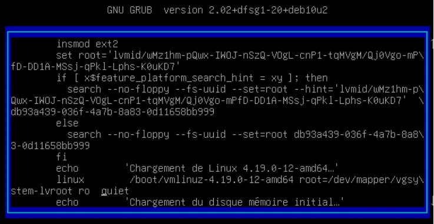
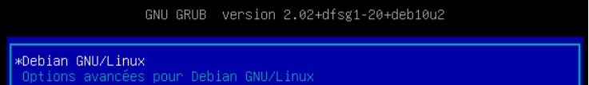

Transcription intégrale structurée du support et de ses instructions. La mise en forme est adaptée au Web ; les compléments pédagogiques restent dans leur onglet distinct.
Administration Debian
GNU/Linux
Module 04 – Debian en mode maintenance
Debian en mode maintenance
Objectifs
Savoir démarrer en mode maintenance depuis GRUB ou depuis le CD d’installation
Réparer Linux
Debian en mode maintenance
Démarrer un système en
mode maintenance
Passer en mode maintenance
Il est parfois nécessaire de passer en mode maintenance sur un ordinateur ou un serveur pour diverses raisons
En voici quelques-unes :
Le système ne démarre plus à la suite d'une mise à jour ou d’une installation
Le mot de passe de l’utilisateur root est perdu
Récupération de données
…
Debian en mode maintenance
Mode maintenance via
GRUB
Méthode 1
Passer par le boot manager GRUB pour passer en mode maintenance
Utiliser les flèches pour choisir la ligne du noyau voulu puis appuyez sur la touche [e]
Ce mode n’est pas fonctionnel en mode « sudo sans mot de passe » pour l’utilisateur.
Capture ou visuel isolé du document de formation.

Capture ou visuel isolé du document de formation.
Méthode 1
Modifier la fin de la ligne suivante
linux
/vmlinuz-4.19.0-8-amd64 root=/dev/mapper/debian--vg-sys ro quiet
De cette manière
linux
/vmlinuz-4.19.0-8-amd64 root=/dev/mapper/debian--vg-sys ro single
Valider avec [ctrl] + [x] ou [F10]. Saisissez le mot de passe root. Attention le clavier est au format QWERTY en_US par défaut
Après vos actions en mode maintenance, la séquence de touches [ctrl] + [d] vous permettra de poursuivre vers le chargement vers la cible « rescue.target »
Méthode 1
Démo
Maintenance via GRUB avec mot de passe root
Debian en mode maintenance
Maintenance via GRUB sans mot de passe root
Méthode 2
Passer par le boot manager GRUB pour passer en mode maintenance
Utiliser les flèches pour choisir la ligne du noyau voulu puis appuyez sur la touche [e]

Capture ou visuel isolé du document de formation.Capture ou visuel isolé du document de formation.
Méthode 2
Modifier la fin de la ligne de cette manière
linux
/vmlinuz-4.19.0-8 root=/dev/mapper/debian--vg-sys ro init=/bin/bash
Valider avec [ctrl] + [x] ou [F10]. Attention le clavier est au format QWERTY en-US
Méthode 2
Le système est démarré mais le système de fichier racine est en lecture seule. Il faut lancer la commande suivante pour obtenir l’accès en lecture-écriture :